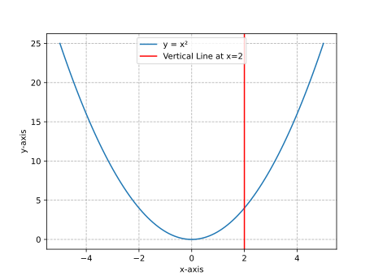

Functions
Chapter 20: Introduction to Functions
Definitions
- Function: A relation that assigns to each element in the domain exactly one element in the range.
- Domain: The set of all possible input values (typically represented as \( x \)).
- Range: The set of all possible output values (typically represented as \( f(x) \)).
- Independent Variable: The input variable (\( x \)) whose value determines the output.
- Dependent Variable: The output (\( f(x) \)) whose value depends on the input.
- Vertical Line Test: A graphical method to determine if a curve represents a function. If any vertical line intersects the curve more than once, it is not a function.
Forms or Classifications
Types of Functions
| Type of Function | Notation | Description | Example |
|---|---|---|---|
| Linear Function | \( f(x) = mx + b \) | A straight line with slope \( m \) and y-intercept \( b \). | \( f(x) = 2x + 3 \) |
| Quadratic Function | \( f(x) = ax^2 + bx + c \) | A parabola with a vertex and axis of symmetry. | \( f(x) = x^2 - 4 \) |
| Piecewise Function | \( f(x) = \begin{cases} \text{expression 1} & \text{if condition 1} \\ \text{expression 2} & \text{if condition 2} \end{cases} \) | A function defined by different expressions over different intervals. | \( f(x) = \begin{cases} x & \text{if } x \geq 0 \\ -x & \text{if } x < 0 \end{cases} \) |
| Machine Learning Model | \( y = f(\mathbf{x}) \) | A function mapping input features \( \mathbf{x} \) to a prediction \( y \). | \( \text{Price} = f(\text{Size, Location}) \) |
Examples
-
Example 1: Evaluating a Function
-
Problem: Given \( f(x) = 3x - 5 \), find \( f(2) \) and \( f(-1) \).
-
Solution:
- For \( f(2) \): [ f(2) = 3(2) - 5 = 6 - 5 = 1 ]
- For \( f(-1) \): [ f(-1) = 3(-1) - 5 = -3 - 5 = -8 ]
-
-
Example 2: Domain and Range
-
Problem: Identify the domain and range of \( f(x) = \sqrt{x + 4} \).
-
Solution:
- Domain: The expression under the square root must be non-negative: [ x + 4 \geq 0 \implies x \geq -4 ] Domain: \( [-4, \infty) \).
- Range: The square root function outputs non-negative values: [ f(x) \geq 0 ] Range: \( [0, \infty) \).
-
-
Example 3: Vertical Line Test
-
Problem: Determine if the following graph represents a function.
-
Visualization:

-
Solution:
- The graph passes the vertical line test because any vertical line intersects the parabola at most once.
- Conclusion: The graph represents a function.
-
-
Example 4: Piecewise Function
-
Problem: Evaluate the piecewise function \( f(x) = \begin{cases} 2x + 1 & \text{if } x < 0 \\ x^2 & \text{if } x \geq 0 \end{cases} \) at \( x = -2 \), \( x = 0 \), and \( x = 3 \).
-
Solution:
- For \( x = -2 \) (use \( 2x + 1 \)): [ f(-2) = 2(-2) + 1 = -4 + 1 = -3 ]
- For \( x = 0 \) (use \( x^2 \)): [ f(0) = 0^2 = 0 ]
- For \( x = 3 \) (use \( x^2 \)): [ f(3) = 3^2 = 9 ]
-
-
Example 5: Real-World Application (Machine Learning)
-
Problem: A machine learning model predicts house prices based on square footage. The function is \( \text{Price} = 150 \times \text{Size} + 50,000 \). Predict the price for a house with \( \text{Size} = 1200 \) sq ft.
-
Solution:
- Substitute \( \text{Size} = 1200 \) into the function: [ \text{Price} = 150 \times 1200 + 50,000 = 180,000 + 50,000 = 230,000 ]
- The predicted price is $230,000.
-
Key Takeaways
- A function is a rule that assigns exactly one output to each input.
- The domain is the set of valid inputs, and the range is the set of possible outputs.
- The vertical line test determines if a graph represents a function.
- Functions can model real-world relationships, such as machine learning models.
- Piecewise functions use different rules for different intervals of the domain.